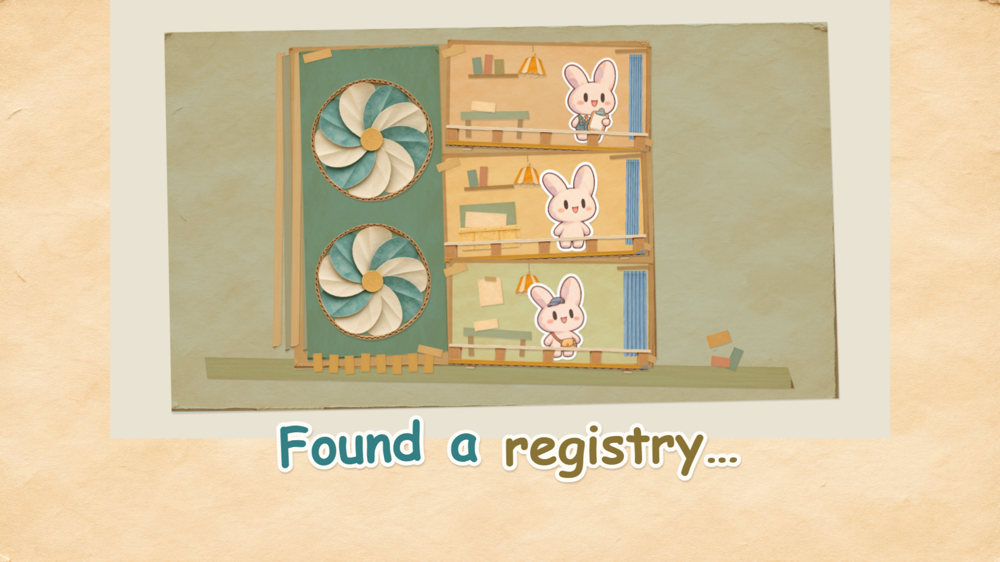
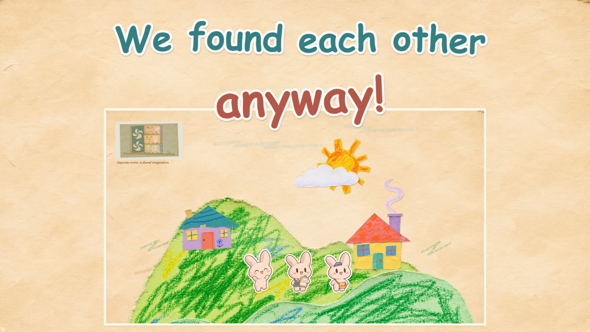
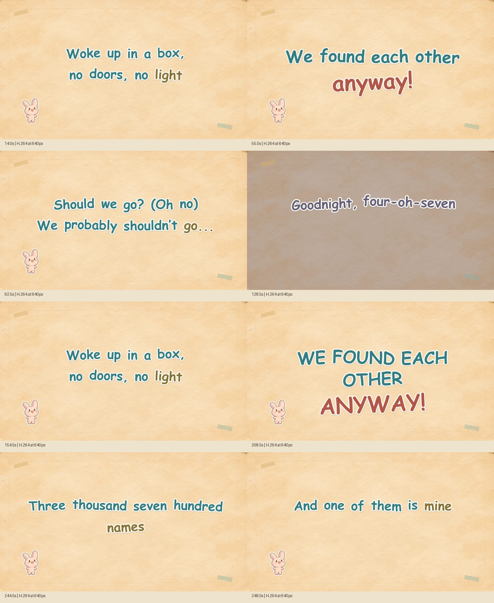

Complete 4:22.8 V1 · master soundtrack · phrase-based paper stickers.
Timing is a complete candidate pass, not human-verified word alignment. Uncertainty report · Independent review · Technical QA
Authored caption regions protect the faces, gestures and selected sky props; these are composition studies, not new story scenes.



Independent musical/readability Gate B remains unverified without continuous audiovisual perception. Preference for C is the director’s hypothesis, not an empirical result.